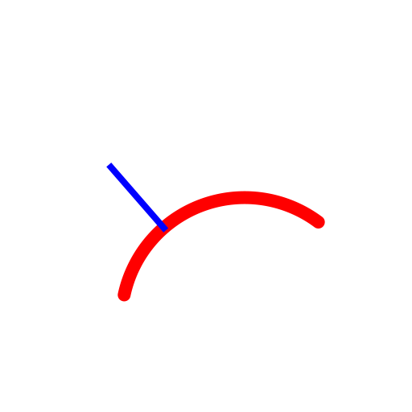

Concentric (with Distance)
Toolbar / Icon:


Menu: Draw > Arc > Concentric (with Distance)
Shortcut: A, C
Commands: arcconcentric | ac
Description:
With this tool you can create one or multiple concentric arcs with a given
distance to an existing arc.
Procedure:
- Enter the distance of the concentric arc from the original base arc in
the options tool bar.
- Enter the number of concentric arcs to create in the options
tool bar.
- Click the base arc. The concentric arc(s) are created on that side on
which the mouse cursor is located while clicking the base arc.